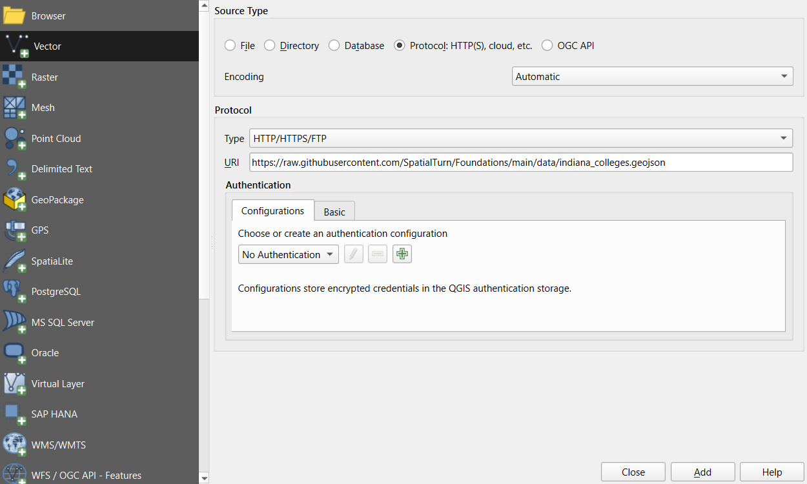
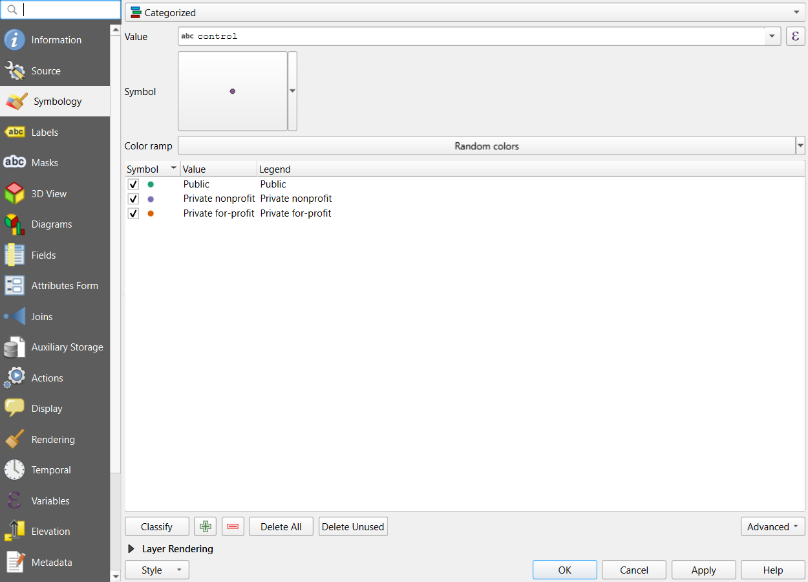
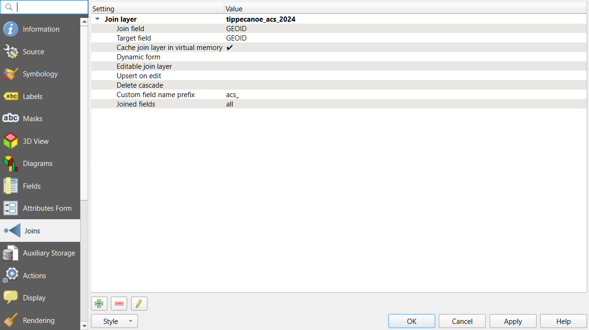
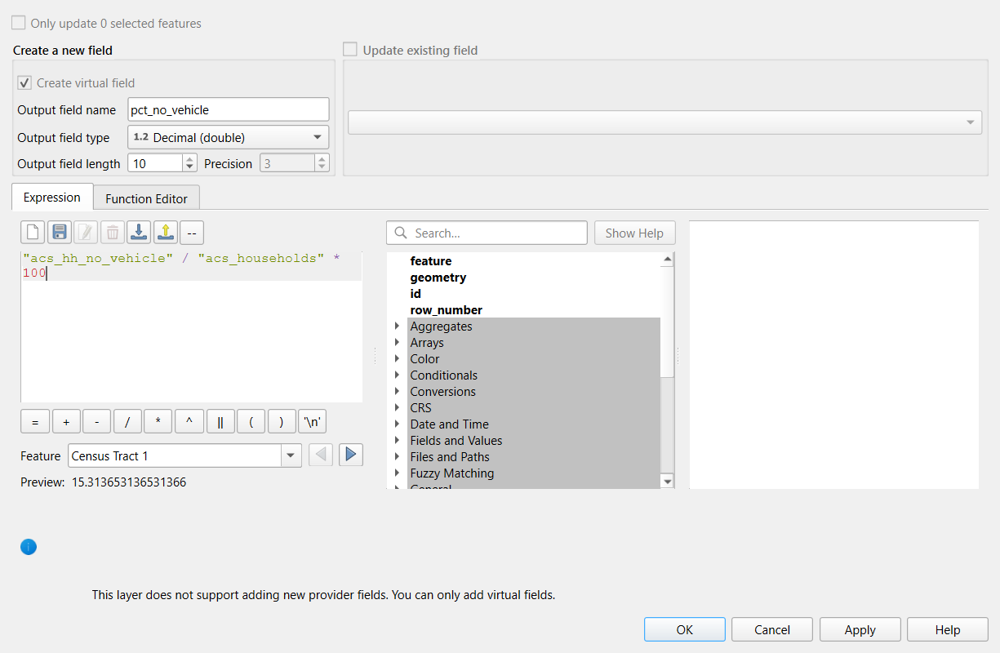

All in One View
Content from Introduction to Foundations
Last updated on 2026-10-20 | Edit this page
Overview
Questions
- What do I need to know before starting the other modules?
- Which tools does this curriculum use, and what is each one for?
- How do Google Colab notebooks work?
Objectives
- Describe what Python, Jupyter notebooks, Google Colab and QGIS are used for
- Open a notebook in Colab, save your own copy and run its cells
- Choose the right tool for a simple geospatial task
- Find your way through the modules of the curriculum
Why a foundations module?
The other modules in this curriculum assume a little background: how to run a Python notebook, what a table and a map layer are, and how to load data into QGIS. This module teaches exactly that, from zero. If you have never written code or opened a GIS, start here. If you already know some Python or QGIS, skim the episodes and use the notebooks as a refresher.
The tools
| Tool | What it is | What we use it for |
|---|---|---|
| Python | A free, general-purpose programming language with excellent libraries for data and maps | Reading, cleaning, analyzing and mapping data in a repeatable way |
| Jupyter notebook | A document that mixes text, code and results | Every Python lesson in the curriculum |
| Google Colab | A free service that runs Jupyter notebooks in your web browser | Running the notebooks without installing anything |
| QGIS | A free, open source desktop GIS | Looking at data, styling layers and making finished maps |
Python and QGIS are not rivals. Many projects use both: Python to download and prepare data, and QGIS to check it visually and design the final map. Both read the same file formats (GeoJSON, GeoPackage, shapefile, GeoTIFF).
Working in Google Colab
Every notebook link in this curriculum opens in Colab. The first time:
- Make sure you are signed in to a Google account.
- Click the notebook link. It opens read-only, straight from GitHub.
- Choose File > Save a copy in Drive. Your copy keeps your changes; the original stays clean.
- Run cells from top to bottom: click a cell and press Shift + Enter.
- If Colab warns that the notebook was not written by Google, click Run anyway.
A few things to know:
-
Order matters. Later cells use variables made in
earlier cells. If you skip a cell, you will see a
NameError. Use Runtime > Run before to catch up. - Sessions end. After a while without activity, Colab disconnects and forgets everything in memory. Reconnect and rerun the cells from the top.
- Files are temporary. Files you create appear in the Files panel on the left and disappear when the session ends. Download anything you want to keep.
- Data comes from the web. All notebooks read their data straight from a web address, so you never need to download data by hand.
Do I need to install Python?
No. Colab runs Python on Google’s computers and already includes the libraries used in this curriculum (pandas, matplotlib, GeoPandas). If you prefer to work on your own computer, the Setup page explains how to install Python with Anaconda.
What this module covers
| Episode | You will learn | Notebooks |
|---|---|---|
| Python Basics | Running cells, variables, text, lists, dictionaries, decisions, loops and functions | 2a to 2f |
| Working with Data | Tables with pandas and charts with matplotlib | 3a and 3b |
| Geospatial Python Basics | Map layers with GeoPandas, coordinate reference systems, joining data, and rasters | 4a to 4d |
| Map Your County in Python | Capstone: a Census table to a finished map | 5a |
| Getting Started with QGIS | Loading data from the web, styling layers and making a finished map layout | none (QGIS) |
| Tables, Joins and Selections in QGIS | Joining Census tables, calculating rates and selecting features | none (QGIS) |
| Map Your County in QGIS | Capstone: the same map, made in QGIS | none (QGIS) |
Where to go next
After this module, the curriculum follows the life of a research dataset:
- Data Management: data models, formats, coordinate systems and planning
- Data Collection: repositories, census data, geocoding, imagery and field data
- Data Processing: cleaning real data, geoprocessing (buffers, overlays and distances), raster processing and automating repeated steps, in QGIS and Python
- Data Analysis: network analysis, spatial autocorrelation, clustering and NDVI
- Data Visualization: charts, map design, finished maps and accessibility
- Data Curation: metadata, documentation, preservation and sharing
- Case Studies: park access, food deserts and grocery access, from start to finish
Which tool?
Would you reach for Python (in Colab), QGIS, or both?
- Download median income for every county in the United States and calculate a new column
- Design a printed poster map of a city’s parks with a legend and scale bar
- Check whether a layer someone sent you lines up with the roads
- Repeat the same analysis every month when new data is published
- Python. Downloading thousands of rows and calculating columns is quick to code and easy to repeat.
- QGIS. Its print layout is made for finished maps.
- QGIS, for a quick visual check over a basemap (Python could check it too).
- Python. A notebook can be rerun each month with the new data, giving the same steps every time.
- Python (in Jupyter notebooks on Google Colab) is for repeatable data work; QGIS is for looking at data and making maps
- Save your own copy of each notebook, and run cells in order with Shift + Enter
- Colab sessions and files are temporary; data is always read from the web
- This module prepares you for every other module in the curriculum
Content from Python Basics
Last updated on 2026-10-17 | Edit this page
Overview
Questions
- How do I write and run Python code?
- How does Python store numbers, text and collections of values?
- How do I make decisions, repeat work and reuse code?
Objectives
- Run code in a notebook and read error messages
- Use variables, numbers, strings, lists and dictionaries
- Write
ifstatements andforloops - Write and call your own functions
How this episode works
This page gives a short overview of each idea. The real learning happens in the six notebooks at the end: each takes 15 to 20 minutes, covers one idea, and ends with an exercise and its solution. Work through them in order. The examples use Indiana counties, so by the end you will already be thinking about the kind of data the other modules use.
Running code and reading errors
A notebook has text cells and code
cells. Run a code cell with Shift + Enter and
its output appears below it. print() shows a value;
# starts a comment that Python ignores.
Errors are normal. Read the last line of the message
first: it names the problem, such as a SyntaxError (Python
could not read the line, often a missing quote or bracket) or a
NameError (a name Python does not know, often a typo or a
skipped cell).
Variables and types
= stores a value under a name. Every value has a
type:
| Type | Examples | Used for |
|---|---|---|
int |
177513 |
Whole numbers, such as counts |
float |
499.8 |
Decimal numbers, such as areas and rates |
str |
"Tippecanoe", "18157"
|
Text, including identifiers like FIPS codes |
bool |
True, False
|
Yes or no |
PYTHON
population = 177513
land_sq_mi = 499.8
density = population / land_sq_mi # 355.2 people per square mileNumbers stored as text ("177513") cannot be used in math
until you convert them with int() or float().
Real data often arrives this way: the Census API, for example, returns
every value as text.
Text (strings)
f-strings build text from values, and string methods clean it:
Lists and dictionaries
A list holds values in order; positions start at
0. A dictionary holds
key: value pairs, so you look values up by name.
PYTHON
counties = ["Marion", "Lake", "Allen"]
print(counties[0], counties[-1]) # first and last
allen = {"name": "Allen", "fips": "18003", "unemployment": 4.3}
print(allen["unemployment"])A dictionary of lists (one list per column) and a list of dictionaries (one dictionary per row) are both ways of describing a table. pandas, in the next episode, turns either one into a DataFrame.
Decisions and loops
if, elif and else choose what
runs. A for loop repeats a block for every item in a list.
The indented lines belong to the block.
Functions
A function packages a piece of work under a name so you can reuse it.
return sends a result back.
PYTHON
def density(population, area):
"""Return people per unit of area."""
return population / area
density(177513, 499.8)-
3.5:/always gives a decimal number -
3://divides and rounds down -
72: joining two strings, not adding numbers -
20: positions start at 0, so[1]is the second item
The populations are stored as text (inside quotes),
and Python cannot add text to a number, so it raises a
TypeError. Convert each value inside the loop with
total = total + int(p), or store the numbers without quotes
in the first place.
- Run cells with Shift + Enter, in order, and read the last line of any error first
- Values have types (
int,float,str,bool); convert numbers stored as text before doing math - Lists keep values in order (from position 0); dictionaries look values up by key
-
if/elif/elsemake decisions;forloops repeat work; functions package work for reuse
Notebooks
Work through these in order. Each one opens in Google Colab.
| Notebook | What you will do |
|---|---|
| 2a. Notebooks, Cells and Printing | Run cells, print, write comments, read error messages and edit text cells |
| 2b. Variables, Types and Math | Store values, check types, calculate a population density and convert text to numbers |
| 2c. Strings: Working with Text | Build text with f-strings, clean messy names and split coordinates |
| 2d. Lists and Dictionaries | Pick items from lists, store county records in dictionaries, and see how both become tables |
| 2e. Conditions and Loops | Classify counties with if and loop over lists to build
results |
| 2f. Functions | Write reusable functions with parameters, defaults and return values |
Content from Working with Data
Last updated on 2026-10-17 | Edit this page
Overview
Questions
- How do I load a table of data into Python?
- How do I select, filter, sort and summarize rows and columns?
- How do I turn a table into a clear chart?
Objectives
- Read a CSV file from the web into a pandas DataFrame
- Inspect a DataFrame’s size, columns and data types
- Select columns, filter rows, sort, add calculated columns and summarize groups
- Make bar charts, histograms and scatter plots with matplotlib, with clear labels
Libraries
Python’s strength for data work comes from
libraries: packages of ready-made code that you load
with import. Two of them do most of the work in this
curriculum:
| Library | Usual nickname | What it does |
|---|---|---|
| pandas | pd |
Tables (DataFrames): reading, cleaning, filtering, summarizing, joining |
| matplotlib | plt |
Charts of every kind |
The nicknames are a convention: you will see them in almost every tutorial and answer online.
DataFrames
A DataFrame is a table with labeled columns. Each
column has one data type, and each row is one record, such as one
county. pd.read_csv() reads a file straight from its web
address.
PYTHON
url = "https://raw.githubusercontent.com/SpatialTurn/Foundations/main/data/indiana_county_stats.csv"
counties = pd.read_csv(url)
counties.head() # first five rows
counties.dtypes # the type pandas guessed for each columnpandas guesses each column’s type from its values. Identifiers such as FIPS codes often come out as numbers. That looks harmless, but it drops leading zeros and breaks joins later, so convert them to text.
The core operations
| Task | Code |
|---|---|
| One column | counties["pop_2012"] |
| Several columns | counties[["name", "pop_2012"]] |
| Filter rows | counties[counties["unemp_2016"] >= 5.5] |
| Two conditions | counties[(counties["pop_2012"] < 30000) & (counties["unemp_2016"] >= 5)] |
| Sort | counties.sort_values("pop_2012", ascending=False) |
| New column | counties["density"] = counties["pop_2012"] / counties["land_sq_mi"] |
| Summary statistics | counties.describe() |
| Summarize by group | counties.groupby("density_class")["unemp_2016"].mean() |
Calculations on a column apply to every row at once, so you rarely need a loop.
Charts
matplotlib has one function per chart type. Choose the chart from the question:
| Question | Chart | Function |
|---|---|---|
| How do a few categories compare? | Bar chart |
plt.bar(), plt.barh()
|
| How are the values of one variable spread out? | Histogram | plt.hist() |
| Are two variables related? | Scatter plot | plt.scatter() |
| How does something change over time? | Line chart | plt.plot() |
PYTHON
plt.hist(counties["unemp_2016"], bins=12)
plt.title("Unemployment across Indiana's 92 counties, 2016")
plt.xlabel("Unemployment rate (%)")
plt.ylabel("Number of counties")
plt.show()Every chart needs a title and axis labels with units. For very skewed
values, such as population density, a logarithmic axis
(plt.xscale("log")) makes the pattern visible. The Data
Visualization module goes much further into chart and map design.
A small table with the name and 2012 population of the counties whose 2016 unemployment rate was above 6%, sorted from the smallest population to the largest. Reading from the inside out: filter the rows, sort them, then keep two columns.
Challenge 2: Pick a chart
Which chart would you use for each question?
- Are counties with more people per square mile also counties with higher unemployment?
- Which five counties have the most people?
- Are most counties’ unemployment rates close to the average, or spread out?
- A scatter plot of density against unemployment (with a log scale for density)
- A bar chart, sorted from largest to smallest
- A histogram of unemployment rates
- pandas reads tables from the web into DataFrames with
pd.read_csv(url) - Check data types first; keep identifiers such as FIPS codes as text
- Select, filter, sort, calculate and group with a few lines of code, no loops needed
- Pick the chart that answers the question, and always label it
Notebooks
| Notebook | What you will do |
|---|---|
| 3a. Working with Tables in pandas | Read Indiana county data, filter, sort, add a density column and summarize by class |
| 3b. Plotting with matplotlib | Make bar charts, histograms and scatter plots, combine panels and save a figure |
Content from Geospatial Python Basics
Last updated on 2026-10-20 | Edit this page
Overview
Questions
- How does Python store and map geographic data?
- What is a coordinate reference system, and why does it matter for measuring?
- How do I combine a table with a map layer, or two layers with each other?
- How is raster data different from vector data, and how do I read it?
Objectives
- Read vector data from the web into a GeoPandas GeoDataFrame and map it
- Check, convert and correctly label a layer’s coordinate reference system
- Measure areas and distances in meters
- Combine data with attribute joins and spatial joins
- Read a raster with rasterio, summarize its cells and clip it to a polygon
Vector data and GeoDataFrames
Most social science maps use vector data: points (a store, a survey respondent), lines (a road, a river) and polygons (a county, a census tract). Each feature has a shape and a row of attributes.
GeoPandas stores vector data as a
GeoDataFrame: a pandas DataFrame with one extra
geometry column. Everything from the previous episode
(selecting, filtering, sorting, new columns) still works, and maps are
one line away.
PYTHON
import geopandas as gpd
url = "https://raw.githubusercontent.com/SpatialTurn/Foundations/main/data/indiana_counties.geojson"
counties = gpd.read_file(url)
counties.plot(column="unemp_2016", cmap="YlOrRd", legend=True)gpd.read_file() reads GeoJSON, shapefiles (also zipped
ones) and GeoPackages, from a file or a web address. Shade areas by
rates (unemployment, density), not raw counts, or big
counties will dominate the map simply because they are big.
Coordinate reference systems
Coordinates are only numbers; the coordinate reference system (CRS) says what they mean. Web data is usually in EPSG:4326: latitude and longitude, in degrees. Degrees are fine for storing data, but a degree of longitude shrinks from about 111 km at the equator to about 85 km in Indiana, so areas and distances calculated in degrees are meaningless.
| Method | What it does | When to use it |
|---|---|---|
layer.crs |
Shows the CRS | Always, before combining or measuring layers |
layer.to_crs(epsg=26916) |
Converts the coordinates to another CRS | Before measuring, or to match another layer |
layer.set_crs(epsg=4326) |
Labels a layer whose CRS is missing; the numbers do not change | Only when the CRS is missing and you know what it should be |
For Indiana, EPSG:26916 (UTM zone 16N, in meters) is a good choice for local distances, and EPSG:5070 (USA Contiguous Albers Equal Area) for areas across the state or the country. The Data Management module’s Coordinate Reference Systems episode explains datums and projections in depth.
Joining data
| Join | Matches rows by | GeoPandas |
|---|---|---|
| Attribute join | A shared ID, such as a FIPS code or GEOID | layer.merge(table, on="fips") |
| Spatial join | Location: which polygon contains each point | gpd.sjoin(points, polygons, predicate="within") |
The most common reason an attribute join fails is that the ID is text
in one table and a number in the other. Convert both to text (and pad
with zfill() to the right length) before joining, and
always compare the row counts before and after. A spatial join needs
both layers in the same CRS.
Raster data
A raster covers an area with a grid of equal cells, each holding one number: an elevation, a temperature, a satellite reflectance, or a class code such as “forest”. Rasters suit things that vary continuously across space, while vector data suits discrete features.
| Vector | Raster | |
|---|---|---|
| Stores | Features with shapes and attributes | A grid of cells, one value per cell per band |
| Detail set by | The accuracy of the shapes | The cell size (resolution), for example 30 m |
| Typical files | GeoJSON, shapefile, GeoPackage | GeoTIFF |
| Python library | GeoPandas | rasterio (with NumPy) |
Every raster also has a CRS, an extent and a no-data
value that marks cells with no measurement. Read the cells with
masked=True so that value does not distort your
statistics.
PYTHON
import rasterio
dem = rasterio.open("https://raw.githubusercontent.com/SpatialTurn/Foundations/main/data/tippecanoe_dem.tif")
print(dem.crs, dem.res, dem.nodata)
elev = dem.read(1, masked=True) # a NumPy array of elevations in meters
print(elev.min(), elev.max())Some rasters hold measurements (elevation, temperature): averages and histograms make sense. Others are categorical (land cover codes): count the cells of each class instead, because the average of “forest” and “water” means nothing. The Data Management module’s Geospatial Data Models episode compares the two data models in more depth.
Challenge 1: set_crs or to_crs?
- A shapefile arrives with no CRS. Its metadata says the coordinates are latitude and longitude (WGS 84).
- You need the distance in meters between two stores stored in EPSG:4326.
- One layer is in EPSG:4326 and another in EPSG:26916, and you want to draw them together.
-
set_crs(epsg=4326): the CRS is missing and you know what it is, so you only add the label. -
to_crs(epsg=26916)first, then measure: the coordinates must be converted to meters. -
to_crs()one layer to match the other, for examplelayer2.to_crs(layer1.crs).
Challenge 2: Why did the join fail?
You join a table of tract statistics to tract boundaries on
GEOID, and every row of the result has empty statistics.
What would you check first?
Check the type and format of GEOID in both tables. A
common cause is that one table stores it as text
("18157010400") and the other as a number
(18157010400), or that leading zeros were lost (a
California tract "06001400100" read as the number
6001400100). Convert both to text with
.astype(str).str.zfill(11) (11 characters for tracts) and
join again. Also check that both tables cover the same year, because
tract boundaries change between censuses.
Challenge 3: Vector or raster?
Which data model would you choose for each, and why?
- The locations of 17 supermarkets
- Air temperature across Indiana at 2 p.m.
- Land cover (forest, crops, water, developed) for a county
- Census tract boundaries with their population
- Vector (points): a few discrete features with attributes such as a name.
- Raster: temperature varies continuously, so a grid of values fits.
- Usually raster (as in the NLCD land cover in notebook 4d), because satellites classify every cell. It can be converted to polygons, but the files grow large.
- Vector (polygons): tracts are discrete areas with attributes.
- A GeoDataFrame is a pandas DataFrame plus a
geometrycolumn;gpd.read_file()reads it from the web - Check
.crsfirst; useto_crs()to a projected CRS in meters before measuring, andset_crs()only to label missing CRS information - Attribute joins match IDs (make them the same type first); spatial joins match locations (same CRS first)
- A raster is a grid of cells with a CRS, a cell size and a no-data value; rasterio reads it into a NumPy array
Notebooks
| Notebook | What you will do |
|---|---|
| 4a. Vector Data with GeoPandas | Read Indiana counties and Lafayette food stores, make a choropleth and layer points over polygons |
| 4b. Coordinate Reference Systems | Compare areas in degrees and meters, measure a distance, and see what a wrong CRS label does |
| 4c. Joining Tables and Layers | Fix a failing FIPS join, then find which stores lie inside the city limits |
| 4d. Raster Data with rasterio | Read Tippecanoe County elevation and land cover, look up values at points, and clip land cover to the cities |
Content from Map Your County in Python
Last updated on 2026-10-20 | Edit this page
Overview
Questions
- Can I take a Census table and boundaries all the way to a finished, shareable map on my own?
- What makes a map “finished”?
Objectives
- Join a Census table to tract boundaries and check the join
- Clean Census “no estimate” codes and zero denominators before calculating rates
- Choose a classification for a skewed rate and show missing data honestly
- Export a map with a title, legend, scale bar, north arrow and source line
The capstone
This episode is a small project that uses everything in the Python part of Foundations: reading data from the web (notebooks 3a and 4a), coordinate systems (4b), joins (4c) and plotting (3b). The instructions are shorter than before. Each step says what to do and offers a hint and a hidden solution, so try first and peek only when you are stuck.
The brief. A local food bank wants a one-page map of where households without a car live in Tippecanoe County, Indiana, to plan a delivery service. You will deliver it as a PNG image that a reader with no GIS experience can understand.
The data is the same as in the QGIS version of this capstone, so you can compare your result with a colleague who uses QGIS:
| File | Contents |
|---|---|
tippecanoe_tracts.geojson |
43 census tract boundaries with GEOID
|
tippecanoe_acs_2024.csv |
ACS 2024 5-year estimates per tract, downloaded once from the Census API for this lesson |
An optional last section shows how to make the same map for your own county, using your own Census API key.
What a finished map needs
A map leaves your hands and is read without you there to explain it. It needs to answer four questions on its own:
| Question | Map element |
|---|---|
| What is shown, and in what units? | A title (ideally stating the finding) and a legend with units |
| Where is it, and how big? | Recognizable shapes, a scale bar, a north arrow |
| Where does the data come from, and when? | A source line with the dataset and year |
| What is missing? | A visible no data class, never a misleading zero |
Three traps in real Census tables
You will meet all three in this capstone:
-
IDs as numbers. Read
GEOIDas text, or leading zeros vanish and joins fail in states with codes that start with 0. - Special codes. The Census Bureau writes -666666666 where it cannot estimate a value (median income in two Purdue tracts here). Replace codes with missing values before any calculation.
- Zero denominators. A tract made of residence halls has people but no households, so a rate per household does not exist there. It must be missing, not 0%.
Challenge: Which classification?
The share of households without a vehicle ranges from under 1% to about 41%, and most tracts are below 10%. Which classification would you use for a five-class choropleth: equal interval, quantile, or natural breaks?
With a skewed distribution, equal interval puts most tracts in the lowest one or two classes and wastes the rest. Natural breaks follows the gaps in the data and shows both the many low tracts and the few very high ones; quantile (equal counts) gives every class the same number of tracts, which is good for rankings but can split similar values. The notebook uses natural breaks. Whatever you choose, say so in the legend or a note.
- Join, then check: row counts and unmatched rows
- Clean special codes and zero denominators before computing rates
- Project to meters, pick classes that suit the distribution, and show missing data clearly
- A finished map has a title, legend with units, scale bar, north arrow and source line
Notebook
| Notebook | What you will do |
|---|---|
| 5a. Map Your County | Join, clean, classify and finish a map of households without a car, then a poverty map; optionally repeat it for your own county |
Content from Getting Started with QGIS: Your First Map
Last updated on 2026-10-25 | Edit this page
Overview
Questions
- How do I load spatial data into QGIS, including directly from the web?
- How do I explore a layer’s attributes?
- How can I style point data by category and polygon data by value?
- How do I create and export a finished map layout?
Objectives
- Add a basemap and load a vector layer from a web address
- Explore a layer’s attribute table
- Style points with categorized symbology
- Build a choropleth map with graduated symbology and compare classification methods
- Create a print layout with title, legend, scale bar, north arrow and source, and export it
Before you start
You need QGIS installed. If you have not installed it yet, or the interface is new to you, follow the Setup page first. These steps were checked in QGIS 4.0; QGIS 3.34 and later look almost the same, and differences are noted where they matter.
We will use two small datasets hosted with this lesson. You do not need to download anything: QGIS can read a file directly from its web address.
| Dataset | File | Contents |
|---|---|---|
| Indiana colleges (points) | indiana_colleges.geojson |
70 degree-granting colleges and universities with name,
city, control (Public, Private nonprofit,
Private for-profit) and level (4-year or 2-year). From the
National Center for Education Statistics (IPEDS, 2023). |
| Indiana counties (polygons) | indiana_counties.geojson |
92 counties with pop_2012, land_sq_mi,
density (people per square mile) and
unemp_2016 (percent) |
Web addresses to copy:
-
Indiana colleges (points):
https://raw.githubusercontent.com/SpatialTurn/Foundations/main/data/indiana_colleges.geojson -
Indiana counties (polygons):
https://raw.githubusercontent.com/SpatialTurn/Foundations/main/data/indiana_counties.geojson
Each part below ends with a Check line that says what you should see. If your screen does not match, fix that part before moving on; most problems later come from a step that went wrong earlier.
Part 1: Add a basemap
A basemap gives your data geographic context.
- In the Browser panel (usually on the left), expand XYZ Tiles. If you do not see the Browser panel, open it with View > Panels > Browser.
- Right-click OpenStreetMap and choose Add Layer to Project.
Check: a world map fills the map canvas, and
OpenStreetMap is listed in the Layers
panel.
Part 2: Load a layer from the web
- Go to Layer > Add Layer > Add Vector Layer.
- Under Source Type, choose Protocol: HTTP(S), cloud, etc.
- Set Type to HTTP/HTTPS/FTP. (In QGIS 4 this list starts with cloud storage services, so check it; in QGIS 3 it is already selected.)
- In URI, paste the colleges web address from the list above.
- Click Add, then Close.

- If the points are hidden under the basemap, drag
indiana_collegesaboveOpenStreetMapin the Layers panel. Layers at the top of the list are drawn on top. - Right-click the colleges layer and choose Zoom to Layer.
Check: about 70 points over Indiana, with clusters around Indianapolis, Fort Wayne and the Chicago suburbs in the northwest.
Loading local files
To load a file saved on your computer instead, keep Source
Type as File and browse to it. For a
shapefile, select the .shp file; the .dbf,
.shx, .prj and .cpg files with
the same name must be in the same folder. A zipped shapefile can be
added directly, without unzipping.
Save your project now (Project > Save, which
creates a .qgz file) and save regularly as you work.
Part 3: Explore the attributes
- Right-click the colleges layer and choose Open Attribute Table.
- Click the
controlcolumn header to sort it. - Click the Identify Features tool (the “i” icon on the toolbar), then click one point on the map to see its attributes in a panel.
Check: the table has 70 rows, one
per college, and the columns name, city,
control, level and unitid (the
federal ID). 16 colleges are Public, 42 Private nonprofit and 12 Private
for-profit.
The attribute table holds the data behind the map. Every styling choice you make next is based on one of these columns. Look up Purdue: why might “Purdue University Global”, an online university, appear in West Lafayette? (Its official address is there; locations in a dataset are not always where the activity happens.)
Part 4: Style the points
Color the colleges by who runs them:
- Right-click the colleges layer and choose Properties, then the Symbology tab.
- At the top, change Single Symbol to Categorized.
- Set Value to
control. - Click Classify. Each type gets its own color. (QGIS also adds an empty “all other values” row; you can leave it.)
- Double-click a symbol to change its color or size. Use clearly different colors, and a size of about 3 millimeters.
- Click OK.

Check: three colors on the map, and three entries under the layer in the Layers panel.
Each renderer is suited to a type of data:
| Renderer | Use for | Example |
|---|---|---|
| Single Symbol | Showing where things are | All colleges in one style |
| Categorized | Categories (no order) | College control
|
| Graduated | Numbers (low to high) | County density
|
To rename the layer, as it will appear in the legend, open Properties > Source and change the Layer name (for example, to “Colleges by control”), or right-click it and choose Rename Layer.
Part 5: Build a choropleth map
Now load the Indiana counties and shade them by population density.
- Load the Indiana counties web address the same way as in Part 2.
- Open Properties > Symbology and change Single Symbol to Graduated.
- Set Value to
density. - Choose a Color ramp such as Blues or Viridis.
- Set Mode to Natural Breaks (Jenks) and Classes to 5.
- Click Classify, then Apply (not OK yet).
- Change Mode to Equal Interval, click Classify and Apply. Then try Equal Count (Quantile). Watch how the map changes.
Population density in Indiana is very skewed: most counties have fewer than 200 people per square mile, and Marion County (Indianapolis) has over 2,000. With Equal Interval, almost every county lands in the lightest class. Choose the mode that best shows your message, and click OK.
Check: with Natural Breaks, Marion County is alone in the darkest class.
Why density and not population?
The layer also has pop_2012, a count. Shading areas by a
count mostly shows where big counties or big cities are. Density (people
per square mile) is a rate, so it can be compared fairly between
counties of different sizes. See the Normalization section of the Data
Visualization module’s Fundamentals
of Map Design episode.
For the layout below, keep the counties as a light, plain background: switch their symbology back to Single Symbol with a pale fill, or untick the choropleth layer and load the counties a second time. A map with two strong color schemes is hard to read.
Part 6: Create a map layout
To export a finished map with all its elements, use a Print Layout.
- Go to Project > New Print Layout and give it a name.
- Add the map: choose Add Item > Add Map, then click and drag a rectangle on the page.
- Add a title: choose Add Item > Add Label, drag a box above the map, and type your title in the Item Properties panel. Make it large.
- Add a legend: choose Add Item > Add Legend and drag a box. In Item Properties, untick Auto update, then remove the basemap from the legend with the minus button and rename entries by double-clicking them.
- Add a scale bar: choose Add Item > Add Scale Bar. Set the units to miles or kilometers.
- Add a north arrow: choose Add Item > Add North Arrow.
- Add a source line: add another label at the bottom with the data source and your name, for example “Data: NCES IPEDS 2023; U.S. Census Bureau. Basemap: OpenStreetMap contributors. Map by A. Student, 2026.”
Use Item Properties to change fonts, sizes and frames. Use the Move Item Content tool to pan the map inside its frame without moving the frame.
![Screenshot of the QGIS Print Layout window. The toolbar on the left has the tools for adding items (map, picture, label, legend, scale bar, north arrow, shapes and more). The A4 page in the middle holds a title, a map of Indiana counties with colleges shown as colored dots, a north arrow at the top left of the map, a legend titled Colleges by control at the lower right, a scale bar from 0 to 100 km at the lower left and a source line under the map. The Items panel on the right lists the six items: the source label, the picture (north arrow), the scale bar, the legend, the title label and Map 1.](fd_qgis_layout.png)
Check: the page shows the map, a title, a legend without the basemap, a scale bar, a north arrow and a source line.
Part 7: Export
- In the layout window, choose Layout > Export as Image (PNG) or Layout > Export as PDF.
- Choose a file name and location and accept the default options.
- Save the project again (
.qgz). The layout is saved inside the project.
This example uses a plain county background instead of the basemap, which often reads better on paper.
![A finished QGIS map titled Colleges and universities in Indiana, by control. Indiana's 92 counties are drawn in pale gray with thin outlines, and colleges are colored dots: green for Public, purple for Private nonprofit and orange for Private for-profit. The dots cluster around Indianapolis, Fort Wayne, South Bend and the Chicago suburbs in the northwest. A legend at the lower right lists the three types, a scale bar from 0 to 100 km sits at the lower left, a north arrow at the upper left, and a source line under the map credits NCES IPEDS 2023 and the U.S. Census Bureau.](fd_qgis_final_map.png)
Common beginner mistakes
- Forgetting to save the project
- Loading a web address with the wrong protocol Type (Part 2): the layer fails to load
- Data loaded but not visible: use Zoom to Layer and check the layer order
- Mapping counts instead of rates on a choropleth map
- Leaving layer names such as
indiana_countiesin the legend - Using too many classes or a rainbow color ramp
- Leaving out the source line, legend or title
Keep it simple
Start with a clear, simple map. Add complexity only when it helps the reader.
Hands-on exercise
Challenge 1: An unemployment map of Indiana
Using the Indiana counties layer, create and export a finished map of
2016 unemployment rates (unemp_2016).
- Use Graduated symbology with 5 classes and a sequential color ramp.
- Try two classification modes and pick the one that shows the pattern best.
- Build a layout with a title that states what the map shows, a legend with units (%), a scale bar, a north arrow and a source line.
- Export it as a PNG.
-
Value:
unemp_2016. Color ramp: a single hue such as Oranges or Blues (light for low, dark for high). - Mode: unemployment ranges only from about 3.1% to 6.6% and is not very skewed, so Natural Breaks or Equal Interval both give readable maps. Quantile also works if the message is about rankings.
- Legend: rename the layer to something like “Unemployment rate, 2016 (%)”.
- Title: for example, “Unemployment was highest in northwestern and southern Indiana in 2016”. Check your own map before writing a conclusion like this.
- Source: “Data: U.S. Bureau of Labor Statistics, 2016.”
Challenge 2: Show and label only public universities (optional)
Make the colleges layer show only public 4-year institutions, and label them with their names.
- Right-click the colleges layer and choose Filter….
Enter the expression
"control" = 'Public' AND "level" = '4-year or above'and click OK. The layer now shows only those features (the filter icon appears next to its name), and the attribute table lists only them. - Open Properties > Labels, choose Single
Labels, set Value to
name, and click OK. - To show everything again, open Filter… and clear the expression.
Field names go in double quotes and text values in single quotes; mixing them up is the most common expression error.
Layer CRS and project CRS
Every layer has its own coordinate reference system (CRS), shown under Layer Properties > Information. The project also has a CRS, shown in the bottom-right corner of the window. QGIS reprojects layers on the fly so that they line up on screen, which is convenient but can hide a layer with a wrong or missing CRS. Two habits avoid most problems:
- Before measuring distances or areas, set the project CRS (and reproject layers you will analyze) to a projected system in meters, such as EPSG:26916 (UTM zone 16N) for Indiana.
- If a layer appears in the wrong place, check its CRS before anything else.
Try it: click the EPSG code in the bottom-right corner, search for 26916, and click OK. Indiana looks slightly narrower and less stretched than on the Web Mercator basemap. Notebook 4b in this module shows the same ideas in Python, and the Data Management module’s Coordinate Reference Systems episode explains the theory.
Final takeaways
- QGIS is a free, powerful tool for designing maps.
- Layers can be loaded from files on your computer or directly from a web address.
- Categorized symbology suits categories; graduated symbology suits numbers.
- The print layout is where map elements (title, legend, scale bar, north arrow, source) come together.
- What challenges did you face while making your first map?
- How would you change your map for a different audience?
- Add Vector Layer with the HTTP(S) protocol (Type HTTP/HTTPS/FTP) loads data straight from a web address.
- Use the Check lines: Zoom to Layer and layer order solve most “missing data” problems.
- The attribute table holds the data behind every styling choice.
- Use Categorized for categories and Graduated for numbers, and compare classification modes.
- A Print Layout combines the map with its title, legend, scale bar, north arrow and source.
- Save the project often; export layouts as PNG or PDF.
- Check layer and project coordinate systems before measuring anything.
Content from Tables, Joins and Selections in QGIS
Last updated on 2026-10-25 | Edit this page
Overview
Questions
- How do I attach a table of statistics to map features in QGIS?
- Why do ID columns cause so many failed joins?
- How do I calculate rates, and what happens with zeros and missing values?
- How do I select and export the features that meet a condition?
Objectives
- Load a CSV table from the web and inspect field types
- Join a Census table to census tracts with a table join, and check that it worked
- Create rate fields with the Field Calculator and handle division by zero and Census “no estimate” codes
- Select features by expression, summarize them, and export the result
Why tables matter
Most social science data arrives as a table: a spreadsheet of counts by county, tract or ZIP code, with no shapes in it. To map it, you attach it to boundaries that share an ID. This is the most common task in applied GIS, and also the most common place for silent mistakes.
This episode uses Tippecanoe County, Indiana (Lafayette and West Lafayette):
| Dataset | File | Contents |
|---|---|---|
| Census tracts (polygons) | tippecanoe_tracts.geojson |
43 tracts with GEOID, name and land area
aland_m2
|
| ACS 2024 table (no shapes) | tippecanoe_acs_2024.csv |
One row per tract: GEOID, total_pop,
pop_under18, median_income,
poverty_universe, below_poverty,
households, hh_no_vehicle
|
Web addresses to copy:
-
Census tracts (polygons):
https://raw.githubusercontent.com/SpatialTurn/Foundations/main/data/tippecanoe_tracts.geojson -
ACS 2024 table (no shapes):
https://raw.githubusercontent.com/SpatialTurn/Foundations/main/data/tippecanoe_acs_2024.csv
The table holds 2024 American Community Survey (ACS) 5-year estimates, downloaded once from the Census API for this lesson. The Data Collection module’s Census episode shows how to request them yourself. The same steps in Python are in Foundations notebooks 3a (tables) and 4c (joins).
IDs, types and joins
A table join (also called an attribute join) adds the columns of a table to the features of a layer wherever an ID matches. Census data uses GEOIDs, built by concatenating codes:
| Part | Digits | Tippecanoe example |
|---|---|---|
| State | 2 |
18 (Indiana) |
| County | 3 |
157 (Tippecanoe) |
| Tract | 6 | 010400 |
| Tract GEOID | 11 | 18157010400 |
A GEOID looks like a number but is really a code,
and it should be stored as text. Alabama’s state code
is 01, so an Alabama tract GEOID such as
01001020100 loses its leading zero if a program reads it as
a number (1001020100), and it will never match the text
version in the boundary file. Every field has a type
(text, integer, decimal, date), and QGIS shows it next to the field
name. Checking types before a join saves hours.
After every join, check two things:
- Did every feature find a match? Count the features whose joined columns are empty (NULL).
- Did any feature match twice? A table with duplicate IDs can make a join pick an arbitrary row.
Rates, zeros and missing values
Counts mostly show where many people live. To compare tracts, divide by the right denominator:
| Rate | Numerator | Denominator |
|---|---|---|
| Households without a vehicle (%) | hh_no_vehicle |
households |
| Below the poverty line (%) | below_poverty |
poverty_universe (people whose poverty status is
known) |
| Children (%) | pop_under18 |
total_pop |
Two kinds of trouble appear in real Census tables:
- Zero denominators. Census Tract 104 holds Purdue’s residence halls: 8,248 people but 0 households and a poverty universe of 0, because people in group quarters (dorms, prisons, nursing homes) are not households and are excluded from poverty counts. Dividing by zero has no answer; QGIS returns NULL, which is correct, and the tract should be shown as “no data”, not as 0%.
- Special codes. Where the Census cannot produce an estimate it puts a code instead of a value. Median income is -666666666 for tracts 104 and 105. If you leave it in, any average or map of income is ruined. Replace codes with NULL before using the field.
Student populations also explain why tracts near campus show very high poverty rates: students often report low incomes while being supported by family or loans. That is a real feature of the data, not an error, but it must be explained in any map of poverty in a college town.
Hands-on
These steps were checked in QGIS 4.0 (QGIS 3.34 and later are nearly identical).
Part 1: Load the layer and the table
- Load the tracts web address with Layer > Add Layer > Add Vector Layer, Source Type: Protocol: HTTP(S), cloud, etc., Type: HTTP/HTTPS/FTP, as in the previous episode.
- Load the ACS table web address the same way. A CSV without coordinates loads as a table: it appears in the Layers panel with a table icon and draws nothing on the map.
Check: 43 tract polygons over Tippecanoe County, and
a tippecanoe_acs_2024 table in the Layers panel.
Part 2: Look at the table and its field types
- Right-click
tippecanoe_acs_2024and choose Open Attribute Table. Sort bytotal_popby clicking its header. Find tracts 104 and 105 and look athouseholdsandmedian_income. - Close the table. Right-click the table again, choose
Properties > Fields. The Type
column shows
GEOIDandnameas String (text) and the counts as Integer. - Do the same for the tracts layer: its
GEOIDis also String. The two ID fields match in type, so the join will work.
Check: both GEOID fields are String,
and tract 104 has 0 households.
How did QGIS know the types?
A CSV file is plain text and does not store types. This one comes
with a small companion file, tippecanoe_acs_2024.csvt, that
lists them, and QGIS reads it automatically. Without it, QGIS would read
every column as text when loading from the web, or guess the types when
you load a downloaded CSV with Layer > Add Layer > Add
Delimited Text Layer. That dialog guesses GEOID is
a number unless you tell it otherwise, which is exactly how leading
zeros get lost in states whose codes start with 0.
Part 3: Join the table to the tracts
- Right-click the tracts layer, choose Properties, then the Joins tab.
- Click the green + button at the bottom.
-
Join layer:
tippecanoe_acs_2024. Join field:GEOID. Target field:GEOID. - Leave Custom field name prefix as it is
(
tippecanoe_acs_2024_) or shorten it toacs_. This episode usesacs_. - Click OK. The join appears in the list; click the arrow next to it to see its settings.

- Click OK again to close the Properties.
Check: open the tracts’ attribute table. New columns
such as acs_total_pop and acs_households
appear at the right, filled in for every row.
To check for unmatched features properly, use an expression:
- In the tracts’ attribute table, click Select features using an expression (the icon with an epsilon and a yellow square).
- Enter
"acs_total_pop" IS NULLand click Select Features.
Check: the title bar of the table says 0 selected. If it says 43, the join failed completely; look again at the ID fields and their types.
A table join is virtual: the CSV is not copied into the tracts file, and the columns are looked up each time. Part 6 shows how to save the result as a new file.
Part 4: Calculate rates with the Field Calculator
The tracts layer came from the web, so it is read-only. We add virtual fields: calculated columns stored in the project rather than in the data file, which suits read-only and joined layers.
In the tracts’ attribute table, click the Field Calculator (the abacus icon).
Create virtual field is already ticked and grayed out, with a note at the bottom: “This layer does not support adding new provider fields. You can only add virtual fields.” That is expected for a layer read from the web. Output field name:
pct_no_vehicle. Output field type: Decimal (double).-
Expression:
"acs_hh_no_vehicle" / "acs_households" * 100 Look at the Preview under the expression, then click OK.

Check: a new pct_no_vehicle column.
Sort it: the highest values (above 30%) are tracts 105, 55 and 4, and
tract 104 shows NULL because it has no households.
Now clean the income field. Create another virtual field,
income, type Integer (32 bit), with:
if("acs_median_income" < 0, NULL, "acs_median_income")if(condition, value if true, value if false) is one of
the most useful expressions in QGIS: here, any negative code becomes
NULL and real values pass through.
Check: income is NULL for tracts 104
and 105, and the lowest real value is about $12,600.
Part 5: Select by expression and summarize
- Open Select features using an expression again (or Edit > Select > Select Features by Expression).
- Enter
"pct_no_vehicle" >= 10and click Select Features, then Close. - The selected tracts turn yellow on the map. Right-click the layer and choose Zoom to Selection if you like.
- Open View > Panels > Statistics, choose the
tracts layer and the field
acs_hh_no_vehicle, and tick Selected features only.
Check: 17 tracts are selected. The Statistics panel shows their total households without a vehicle.
Selecting is different from filtering: a selection highlights features but keeps everything in the layer, while Filter… (right-click the layer) hides everything that does not match until you clear it.
Part 6: Save the joined result
- Right-click the tracts layer and choose Export > Save Features As…
-
Format: GeoPackage. File name:
browse to your project folder and name it
tippecanoe_tracts_acs. - Tick Save only selected features if you want just the 17 tracts; leave it unticked for all 43.
- Click OK. The new layer is added to the map.
Check: open the new layer’s attribute table. The
joined acs_ columns and your virtual fields are now real
columns in the file.
Challenge 1: Poverty rate
Create a virtual field poverty_rate with the share of
people below the poverty line. Which tract has the highest rate, and
which tract cannot have one?
Expression:
"acs_below_poverty" / "acs_poverty_universe" * 100. The
highest is Census Tract 105 (about 80%), followed by tracts 54.02, 55
and 112, all near Purdue’s campus, where many residents are students.
Tract 104 has a poverty universe of 0 (residence halls), so its rate is
NULL.
Challenge 2: Why did the join fail?
A colleague joins a county table to Alabama county boundaries on
GEOID. Every joined field is NULL. In the table,
GEOID shows values like 1001; in the
boundaries, 01001. What happened, and how can it be fixed
in QGIS?
The table’s GEOID was read as a number,
which dropped the leading zero, so 1001 never matches the
text 01001. Fixes, from best to quickest:
- Reload the CSV and set the field type to text (in the Delimited Text
dialog, Custom field types, or with a
.csvtfile). - Or create a text field in the table with the Field Calculator,
lpad(to_string("GEOID"), 5, '0'), and join on it instead.
Then check again for NULLs.
Challenge 3: Count or rate?
You want to show where households without a car are concentrated, to
plan a grocery delivery service. Should the map show
acs_hh_no_vehicle or pct_no_vehicle?
Discuss.
It depends on the question. For planning a service, the count matters: a large tract with 5% carless households may contain more households to serve than a small tract with 30%. For comparing need or inequality between neighborhoods, the rate is fair because it removes the effect of tract size. A good choropleth uses the rate; counts are better shown with graduated symbols (circles sized by count). Many reports show both.
- A table join attaches a table to features by a shared ID; check that ID fields have the same type first
- Census GEOIDs are codes: store them as text so leading zeros survive
- After a join, select
"field" IS NULLto find unmatched features - Rates need the right denominator; division by zero gives NULL, and Census codes such as -666666666 must be replaced with NULL
- Selection highlights features, Filter hides the others, and Save Features As makes joins and virtual fields permanent
Content from Map Your County in QGIS
Last updated on 2026-10-25 | Edit this page
Overview
Questions
- Can I take a Census table and boundaries all the way to a finished, shareable map on my own?
- What makes a map “finished”?
Objectives
- Join a Census table to tract boundaries and check the join
- Clean Census “no estimate” codes and zero denominators before calculating rates
- Choose a classification for a skewed rate and show missing data honestly
- Export a print layout with a title, legend, scale bar, north arrow and source line
The capstone
This episode is a small project that uses everything in the QGIS part of Foundations: loading data from the web and making a layout (Getting Started with QGIS), and joins, the Field Calculator and selections (Tables, Joins and Selections). The instructions are shorter than before: each step says what to do and which earlier part shows how. Try first, and open the hints only when you are stuck.
The brief. A local food bank wants a one-page map of where households without a car live in Tippecanoe County, Indiana, to plan a delivery service. You will deliver it as a PNG image that a reader with no GIS experience can understand.
The data is the same as in the Python version of this capstone, so you can compare your result with a colleague who uses Python:
| Dataset | File |
|---|---|
| Census tracts | tippecanoe_tracts.geojson |
| ACS 2024 table | tippecanoe_acs_2024.csv |
Web addresses to copy:
-
Census tracts:
https://raw.githubusercontent.com/SpatialTurn/Foundations/main/data/tippecanoe_tracts.geojson -
ACS 2024 table:
https://raw.githubusercontent.com/SpatialTurn/Foundations/main/data/tippecanoe_acs_2024.csv
What a finished map needs
A map leaves your hands and is read without you there to explain it. It needs to answer four questions on its own:
| Question | Map element |
|---|---|
| What is shown, and in what units? | A title (ideally stating the finding) and a legend with units |
| Where is it, and how big? | Recognizable shapes, a scale bar, a north arrow |
| Where does the data come from, and when? | A source line with the dataset and year |
| What is missing? | A visible no data class, never a misleading zero |
Steps
If QGIS asks you to choose a transformation
When layers in latitude and longitude (EPSG:4326) are drawn in a project in UTM (EPSG:26916), QGIS may open a window that begins “Multiple operations are possible for converting coordinates”. For this county any of the options is accurate to a few meters: keep the first (highlighted) one and click OK.
1. Start a project
Create a folder for the capstone, start a new QGIS project and save it there. Set the project CRS to EPSG:26916 (UTM zone 16N), so the map is not stretched and the scale bar is true.
Click the CRS button at the bottom right of the QGIS window, search
for 26916 and click OK.
2. Load and join
Load both web addresses, join the table to the tracts on
GEOID, and check that no tract is left without a match.
Tables, Joins and Selections, Parts 1
to 3: Properties > Joins, then select
"acs_total_pop" IS NULL in the attribute table. 0 selected
means every tract matched.
3. Calculate the rate
Create a virtual field pct_no_vehicle: households
without a vehicle as a percentage of all households. Check what happens
in Census Tract 104.
Field Calculator, virtual field (ticked automatically for this
read-only layer), Decimal (double):
"acs_hh_no_vehicle" / "acs_households" * 100. Tract 104
(Purdue residence halls) has 0 households, so the result is NULL there,
which is correct.
4. Style the choropleth
Use Graduated symbology on
pct_no_vehicle with 5 classes and a sequential color ramp.
Look at the histogram first and choose a classification mode that suits
a skewed distribution. Then make sure the tract with no value is shown
as no data, not left out or colored like a low
value.
- In the Graduated panel, the Histogram tab (click Load Values) shows most tracts below 10% and a few far higher. Natural Breaks (Jenks) suits this.
- QGIS leaves features with NULL values undrawn in a Graduated style.
To show them, open Layer Styling or Properties
> Symbology, switch to Rule-based, and add
a rule with the filter
"pct_no_vehicle" IS NULL, a light gray symbol and the label “No households (dorms)”. A quicker alternative: load the tracts a second time below the styled layer with a light gray hatch fill, and name it “No data”. - Use a pale outline (white or light gray, 0.2 mm) so small tracts in the city stay readable.
5. Compose the layout
Create a print layout with the map, a title that states the finding, a legend with units and without extra layers, a scale bar in kilometers or miles, a north arrow and a source line. Add an inset or zoom on the cities if the small urban tracts are hard to see (optional).
Getting Started with QGIS, Part 6. A good source line: “Data: U.S. Census Bureau, American Community Survey 2020-2024 5-year estimates, census tracts. Map by (your name), 2026.” For a zoom, add a second map item, set its extent to the cities, and tick Overviews on the main map to show where the zoom is.
6. Export and check
Export the layout as a PNG at 200 dpi or more. Then read it as a stranger would, using the table above.
Challenge: A second map
Make a second finished map, of the poverty rate
(below_poverty as a share of
poverty_universe). Many of the highest-poverty tracts are
near Purdue. Add one sentence to the map that explains why.
Virtual field poverty_rate =
"acs_below_poverty" / "acs_poverty_universe" * 100 (NULL
for tract 104, where the poverty universe is 0). The highest rates,
around 70 to 80%, are in tracts near campus with many students, who
often report low incomes while supported by family or loans. A note such
as “Tracts near Purdue have many students, who often report low incomes”
keeps readers from misreading the map.
Your own county
To map another county, download its state’s tract boundaries from the
Census Bureau’s cartographic
boundary files (a zipped shapefile can be added to QGIS without
unzipping), filter it to your county with Filter… and
"COUNTYFP" = '157' (your county’s code), and request the
ACS table with your own Census API key as shown in the Data Collection
module’s Census
episode. The Python version of this capstone has a ready-made cell
for the table.
- Join, then check for unmatched features
- Clean special codes and zero denominators before computing rates
- Pick classes that suit the distribution, and show missing data as its own class
- A finished map has a title, legend with units, scale bar, north arrow and source line